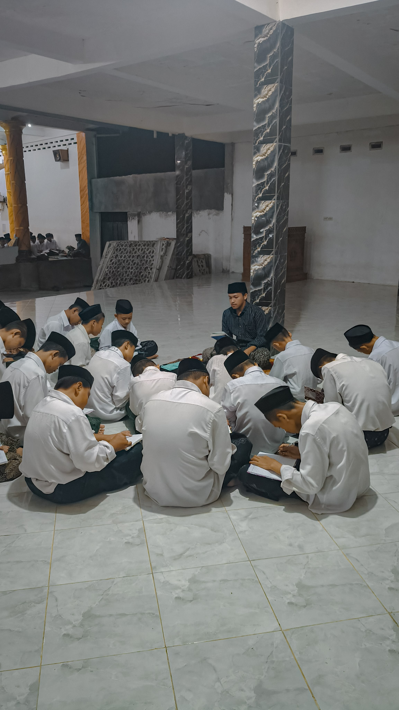

Fokus utama pada pembinaan akhlaq (moralitas & mentalitas) serta pengembangan wawasan sosial dasar bagi santri tingkat pemula.
Jenjang pendalaman yang menekankan pada penguasaan literatur klasik (Kitab Kuning) dan ilmu alat tingkat lanjut.